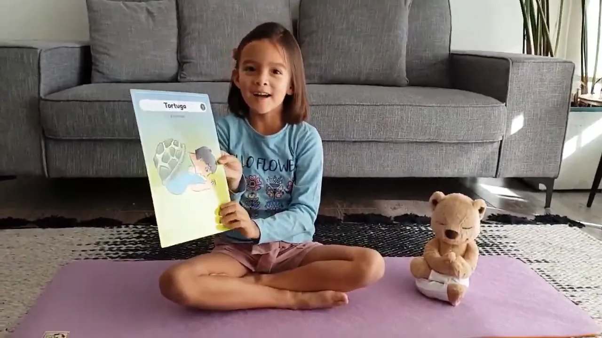

Con harta alegría les comparto un nuevo video que Luz ha preparado para ustedes, esta vez con la postura de la Tortuga o Kurmasana 🐢.
Algunos de los beneficios de la práctica de esta postura son:
• Estira y revitaliza la espalda, los hombros, las piernas y los brazos.
• Masajea los órganos internos.
• Calma el cerebro y alivia ansiedad, estrés, insomnio, fatiga y depresión.
Espero que lo disfruten y nos ayuden con un like 👍 para que más niños y niñas puedan verlo y aprender esta entretenida postura.
Que tengan un lindo fin de semana.
Luz y Carmen 🌟